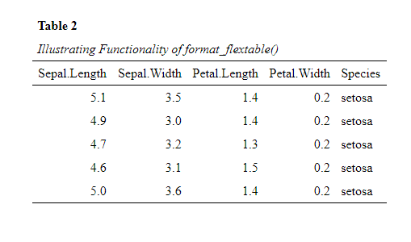

The datscience (dataanalysis and science) R-package contains functions, which are frequently required in the process of preparing data for publication. Among those are:
-
format_flextable()applies the APA 7th theme to a flextable object -
apa_factorLoadings()creates APA 7th based factor-loadings table -
flex_table1()tabular group comparison of 2 or more groups (usualy table 1) -
Rcitation_appendix()Function that allows the creation of a full APA-style table with all citations and informations on the R-packages utilized.
The overall goal was to improve the workflow of data analysis and help with formatting challenges I encountered in the preparation of submission to scientific journals. For example: getting stats from R with the right format into MS Word.
Installation
You can install the latest released version of datscience easily, directly from GitHub with:
# Normal intsallation
install.packages("devtools")
devtools::install_github("Buedenbender/datscience")My recommendation would be to use a the pacman package manger instead, as this installs the latest version from github and directly loads it
# Recommendation: pacman
pacman::p_load_gh("Buedenbender/datscience")Installation Troubleshoot
Some users might encounter: (System Error 267 @win/processx.c:1040), which is due to special characters in the username and the path to the directories (e.g., ö or é). In this case, you can try to install datscience with the remotes package in standalone mode in a fresh R-sessions (no packages loaded) (see below and for reference this stackoverflow posting).
Sys.setenv(R_REMOTES_STANDALONE="true")
remotes::install_github("Buedenbender/datscience")A Teaser of datscience Functionality: flex_table1()
While R provides so many opportunities and power to conduct whatever analyses one can imagine, I found myself often having difficulties with the transfer of the analysis or the results from R session into MS Word.
Example Problem: Get a nicely formatted (in accordance with APA 7th publication manual) sociodemographic table 1 directly into a Word file (*.docx).
As of March 2022 the new function datscience::flex_table1() makes the creation of the Sociodemograhpic Table 1 (including the statistical comparisons of subsamples), basically a piece of cake. Take a look at the new article vignette("flex_table1"). For the example we took the popular iris dataset and included a simulated categorial variable called Color that contains either “Blue” or “Orange”. We supply the function with a formula that determines which variables are to be included in the table. For the example we include the two metric variables Sepal.Length, Sepal.Width as well as the simulated Color
# To load datscience
pacman::p_load_gh("Buedenbender/datscience")
str_formula <- "~ Sepal.Length + Sepal.Width + Color | Species"
flex_table1(str_formula, data = iris_sim, overall = "Overall") # %>%
# save_flextable("Table1.docx")Uncomment the pipe %>% operator above and the line after the call to flex_table1() to diretly save this nicely formatted tabular comparison as .docs (Word) document.
Further Examples of datscience Functionality
Below are just a few examples of the functionality of the package
- The apa_corrTable() Function
The datscience::apa_corrTable() displays correlations with marked significance and additionally adds descriptive statistics to the table, see below:
This function resolves around three other useful functions from this package.
-
Creates the correlation table by calling
datscience::corstars()[1]).datscience::corstars(iris[1:4]) #> Sepal.Length Sepal.Width Petal.Length #> Sepal.Length #> Sepal.Width -0.12 #> Petal.Length 0.87*** -0.43*** #> Petal.Width 0.82*** -0.37*** 0.96*** Appends desired summary stats to the flextable.
-
Formatting of the
flextable::flextable()object to APA 7th style, by utilizing theformat_flextable()function. To illustrate the function, we here use it to display the first 5 rows of the iris data set.datscience::format_flextable(flextable::flextable(head(iris, 5)), table_caption = c("Table 2", "Illustrating Functionality of format_flextable()") )
Utilizing the
datscience::save_flextable()function. This will savely (i.e., prohibiting overwrite of files by serializing the naming) write the flextable object to a Word (.docx) file
- The format_flextable() Function
One of the most utilized functions inside the package is the datscience::format_flextable() which takes a flextable objects and applies the APA 7th edition theme on it. It also provides a work-around to give an APA ready table caption and a note.
Note: The code for the formatting (theme) for format_flextable() function was inspired from the blog post of Rémi Thériault
The flextable package is so versatile and it was exactly what I was looking for to get nicely formatted tables directly from R(studio) into Word. The same holds true for the datscience::format_flextable() function from the datscience package. It just applies some repetitive formatting necessary to convert a flextable to a “publication ready” APA formatted table.
One example of the flexibility would be to just try to print the factor loadings from a principal component analysis (PCA, psych::prinicial)
Let’s first create an exemplary PCA[1, 2]and extract the factor loadings:
(Which is also more conveniently packaged in the function apa_factorLoadings() function)
# Creation of an Example Prinicipal Component Analysis
pacman::p_load(psych, dplyr)
pc <- principal(Harman74.cor$cov, 4, rotate = "varimax")
pc_loadings <- pc %>%
fa.sort() %>%
.[["loadings"]] %>%
round(3) %>%
unclass() %>%
as.data.frame() %>%
mutate(across(
everything(),
~ if_else((. < 0.3), "", as.character(.))
)) %>%
bind_cols(
Communality = pc$communality,
Uniqueness = pc$uniquenesses,
Complexity = pc$complexity
) %>%
mutate(across(where(is.numeric), round, 2)) %>%
tibble::rownames_to_column("items")Formatting these loadings to APA with just one function:
formatted_loadings <- datscience::format_flextable(flextable::flextable(pc_loadings),
table_caption = c("Table 3", "Factor Loadings in Exemplary PCA")
)
formatted_loadingsRelated Work
-
rempsyc I highly recommend this now available package. It offers great utility for psychologist and social scientist getting into R and provides nicely on-point tutorials on how to implement the provided functions (one of which was the origin of
datscience::format_flextable())